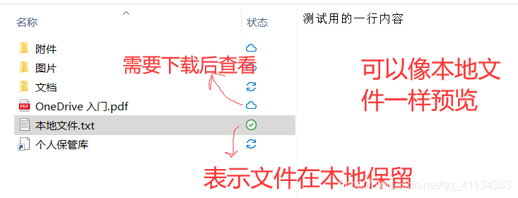

这是其他网盘难以企及的核心优势。对于win用户来说，这种交互是显得非常自然的，看起来就像只是新增了一个系统盘，上传下载文件都直接在文件资源管理器中进行，不需要重新习惯其他软件的使用方法了，非常省力。
onedrive里面的文件有三种状态：在云上、本地可用、始终保留。对于一些不想在本地储存的文件，可以通过“释放空间”的功能，由状态2变成状态1；然后直接点击这个文件，就能重新联网下载。
这大大改变了网盘使用过程中“复制-粘贴”、“剪切-粘贴”的数据迁移模式。
多终端同步很多家都有，但在不同设备上测试后，onedrive的体验比较不错。在电脑和手机上，它的上传和下载相对比较方便，而且里面的图片视频文件可以直接预览。
在onedrive网页端，可以直接打开office文档进行编辑。这样即使你的设备上没有安装office应用，也可以通过网页在office上工作。
手机等移动设备如果安装了office应用，用office打开文档编辑的时候，默认开启自动保存，把更改实时同步到网盘。避免了在手机上修改完一份文档以后还要重新上传一次。
在文件资源管理器同时打开两个onedrive，就可以实现两个盘之间文件的快速传输：
在手机和平板的移动端，切换不同的网盘账号登录很便捷。